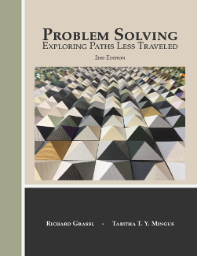

<!-- About/info -->
  <section class="section">
    <div class="container">
      <div class="columns is-variable is-8">
        <div class="column is-3 has-text-centered">
          <div class="content">
          <p></p>
            <!-- <p>
              <a class="button is-info is-outlined is-fullwidth" href="./ctgd/ctgd.html"><span class="icon is-small"><i class="fa fa-book"></i> </span><span>Read online</span></a>
            </p> -->
            <p >
              <a class="button is-info is-outlined is-fullwidth" href="https://amzn.to/2UMdDGb" target="_blank"><span class="icon is-small"><i class="fa fa-shopping-cart"></i> </span> <span>Buy paperback</span></a>
            </p>
            <p >
              <a class="button is-info is-outlined is-fullwidth" href="./pdf/ProblemSolving.pdf"><span class="icon is-small"><i class="fa fa-download"></i></span><span>Download full PDF</span></a>
            </p>
        </div>
      </div>
        <div class="column">
          <div class="content">

          <h3>About the book</h3>
          <p>
            The inclusion of non-routine problems in the elementary and secondary school curriculum provides an opportunity for growth in mathematical maturing.  This book illustrates the interfacing of NCTM Process Standards (2000):  Problem Solving, Reasoning and Proof, Communication, Connections and Representation.
          </p>
          
          <p>
            This text is written for a wide audience.  The workbook can be used for:
            <ul>
              <li>A pre-service teacher course in problem solving.</li>
              <li>An in-service teacher’s workshop.</li>
              <li>A supplement for many mathematics courses in grades 6 – 12.</li>
              <li>A motivated student needing an unguided challenge.</li>
              <li>Your Math Counts participants – just give it to them, they will run with it.</li>
            </ul>
          </p>
          <p>
            Our approach here allows a student to enter into a situation where a certain level of difficulty is encountered, where a considerable number of tools are provided to attack that difficulty, and where a certain level of confidence is developed that persistence will be rewarded upon achieving a satisfactory resolution.  What is most important, but also most difficult to achieve, is the final step in the Pólya process, the step we call TIE-TOGETHER, the inquiry about inquiry step.  Inquiry-oriented teaching requires that a student engaged in exercising process skills reflect upon what has happened in a problem-solving episode and asks, “how did it happen, why did it happen, and will my technique apply in other situations?” 
          </p>
          
          <p>
            Fifteen problem-solving heuristics are illustrated with completely written out solutions, showing typical thought processes engaged in, followed by worksheets with brief hints given for another fifteen problems.  These are followed by thirty problems, two per strategy.  Finally, a large collection of a variety of problems is included separated into elementary and advanced classifications. 
          </p>
            
          <h3>Get the book</h3>
          <p>
            A inexpesive print version of the text is available on <a href="https://amzn.to/2UMdDGb" target="_blank">Amazon</a>.  This should be cheaper than printing the entire book and binding it yourself.
          </p>
          
          <p>
            If you would like to print just what you need, or if you would like to view the book electronically, you can download the <a href="./pdf/ProblemSolving.pdf">full pdf of the book.</a>
          </p>
          
        </div>


            </div>
          </div>
        </div>
      </div>
    </section>


  <!-- CTA buttons: -->
  <!-- <section class="section">
    <div class="container">
      <div class="level">
        <div class="level-item has-text-centered">
          <a class="button is-link" href="./ctgd/">Read online</a>
        </div>
        <div class="level-item has-text-centered">
          <a class="button is-link" href="./pdf/bogart.pdf">Download ebook</a>
        </div>
        <div class="level-item has-text-centered">
          <a class="button is-link" href="http://amzn.to/2CvXJbh">Purchace paperback</a>
        </div>
      </div>
    </div>
  </section> -->
